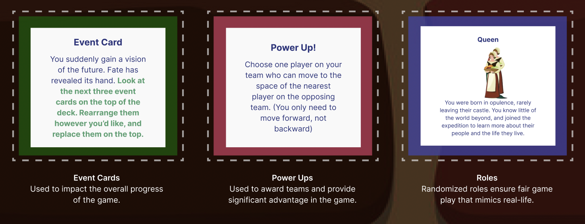

Socioeconomic bias can be an uncomfortable topic for anyone, especially college aged students. Our aim is to bring awareness to the topic while using the metaphor of players escaping a castle. Certain players are given advantages due to their character which alludes to how socioeconomic status can influence status.
As we began user testing, we focused on how our users responded to how easy it was to understand our game. Initially users were a bit confused by the maze aspect as well as the functionality of the roles. To combat this, we inserted a weighted die aligned to each role that would clarify the benefits that players would get with different statuses.
With our event cards, power ups, mini-games, and roles, we mimic what life is like for those who start out with a socioeconomic advantage.
